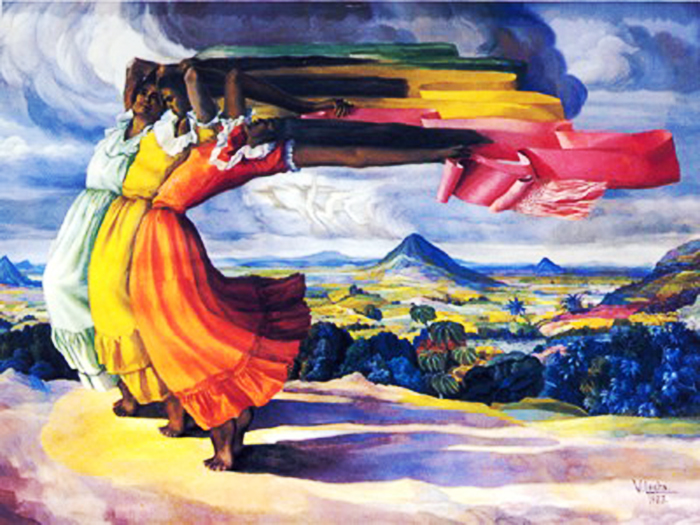

El Museo Prisma cuenta con exposiciones físicas divididas en semipermanentes, temporales y pequeñas muestras por temáticas o dedicadas a algún artista. Te invitamos a conocer las exposiciones disponibles en nuestras salas de exposición.
Estas exposiciones presentan una colección cuidadosamente seleccionada de piezas que revelan la riqueza cultural, histórica y artística de distintas épocas y regiones. A través de objetos emblemáticos, narrativas envolventes y propuestas interactivas, se invita al visitante a sumergirse en un viaje multisensorial por los valores, inquietudes y expresiones de la humanidad. Cada sección está diseñada para despertar la curiosidad, fomentar el diálogo y enriquecer la comprensión del mundo que habitamos.
Cuartos de artistas
Nuestros artistas han retratado personajes, situaciones y paisajes del país a lo largo de la historia.
Ver el conjunto de su trabajo nos permite entender sus motivaciones, sus lenguajes, sus evoluciones, sus cambios y sus maneras particulares de ver la realidad.
Este espacio no busca ofrecer biografías detallas de los artistas, sino que invita a explorar sus creaciones y entrar en diálogo con ellas desde una mirada propia.
Salvador Salazar Arrué
Un caballito de mar chismoso nos cuenta una historia de mares, monstruos y viajes por la imaginación del artista. Las historias fantásticas del universo de Salarrué....
Visitar
Verónica Vides
Reflexiones sobre la naturaleza desde una perspectiva estética de los objetos como seres re creados que invaden los espacios y se mimetizan con el entorno hasta convertirse e...
Visitar
Rosa Mena Valenzuela
Exploración, trazos y colores en una selección de obras que refieren a la guerra civil, de manera sutil en algunos casos y en otros con la fuerza del expresionismo caracteri...
Visitar
Miguel Membreño
El Salvador en un futuro lejano pero reconocible. El artista construye imágenes de película de este territorio que nos llevan al mundo alterno de su imaginación....
Visitar
Julia Díaz
Historias de infancia, retratos, circunstancias y escenas que invitan a recorrer la niñez a través de los ojos de la mirada de la artista; fundadora de la primera galería de arte en El Salvador....
Visitar

Valero Lecha
A través de sus creaciones, captura la esencia y da un viaje por la historia y la cultura, es considerado por algunos el padre de la pintura salvadoreña....
Visitar
.png)